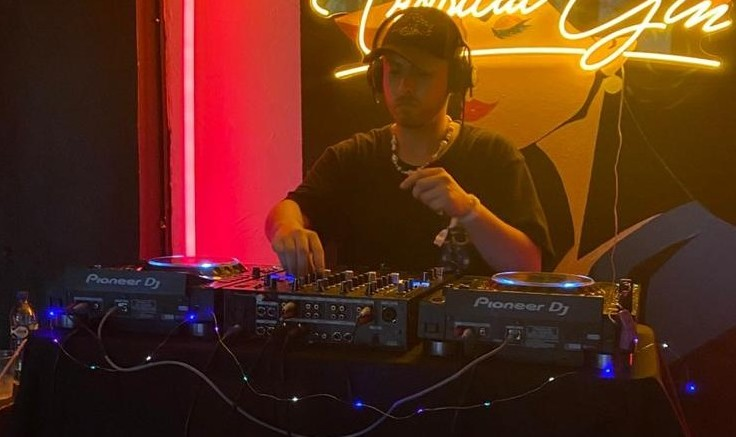

From an early age, Juan “JP Gonz” immersed himself in the universe of electronic music, finding in house and minimal deep tech the genres that would define his sonic identity. At just 17 years old he began performing on local stages, and today, at 25, he has established himself as a Chilean DJ and producer with a unique style, characterized by deep atmospheres and immersive rhythms that authentically connect with the audience.
His career reflects a constant passion for musical exploration and the pursuit of immersive experiences, taking each set beyond the conventional. With a fresh and professional approach, JP Gonz positions himself as a rising talent within the emerging national electronic scene, projecting his energy toward new audiences and international stages.

Presentations & Experience
Club The House AALAN Birthday – December 2024.
Monteluz Wines – Resident between May and July 2025.
Casa Sonido DJ PEAKTIME – Mid-2025 course taught by renowned DJ André Butano.

Social Media
Follow DJPGONZ on his official channels: